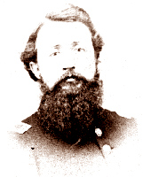
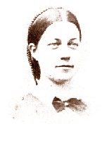

 
| Rachel Cormany was born Rachel Bowman in Canada in 1836. Samuel Cormany entered the world in 1838 and came of age in Chambersburg, Franklin County, Pennsylvania. Samuel had four older half-sisters named Mary Jane, Wilamina (later Karper), Hannah, and Lydia (later Rebok), two older half-brothers named John and Bernard, and two younger sisters named Sarah (later Thompson) and Eleanora. Samuel and Rachel met while attending Otterbein University, a United Brethren school in Westerville, Ohio. They married in November 1860 and visited Rachel's relatives in Canada on their wedding trip. From there, Samuel and Rachel followed the events leading to war and opted to remain abroad. After two years of war and the birth of their first child, Mary Cora, they decided to return to Chambersburg in August 1862. Fearing a Confederate invasion, Samuel enlisted as a second lieutenant in the 16th Pennsylvania Cavalry in September 1862. Rachel and Cora first stayed with Samuel's mother and stepfather, Mary and Daniel Byers, on their farm just north of Chambersburg, but later moved into town to lodge with Jonathan Plough. In late 1865, the Cormanys moved to a farm in Missouri to live in the house that Samuel had built for Rachel before the disruption and devastation of the war. |
|
the most likely matches in the Valley of the Shadow databases: |
| Samuel E. Cormany: | Military Service |
| Philip and Wilamina Karper: | 1870 Census |
| Henry and Lydia Rebok: | 1860 Census |
| Bernard and Elizabeth Cormany: | 1860 Census | 1870 Census |
| Isaac and Sarah Thompson: | 1860 Census | 1870 Census |
In this excerpt from his diary, Samuel Cormany describes his service in the 16th Pennsylvania Cavalry during the Gettysburg Campaign in late June and early July 1863. Samuel reports first the rumors of battle and then the battle itself. While in pursuit of retreating Confederates, Samuel looks for an opportunity to visit his wife Rachel and daughter Cora.
In this excerpt from her diary, Rachel Cormany records the confusion and panic in Chambersburg for a soldier's wife during the Gettysburg Campaign in June and July 1863. During these months, Rachel lodged with Jonathan Plough and his daughters, Annie and Emma, in town. She describes interactions between the "rebs" and the townspeople, including "darkeys," as they passed through and occupied Chambersburg. Rachel sets to paper her conflicting desires to move to a safer location or remain where she could hear news of her husband.
Return to the War Years Personal Papers